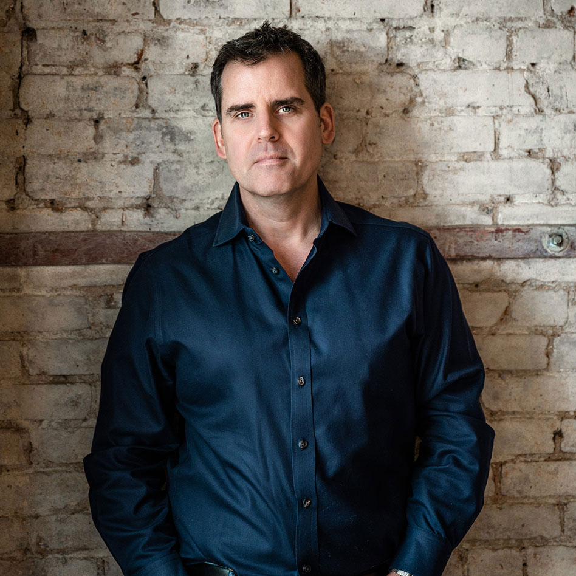
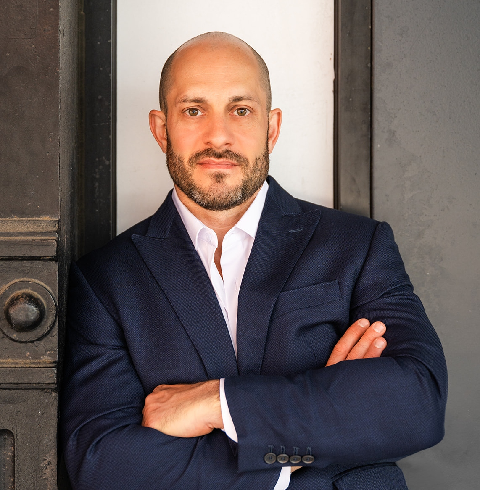

the Leading Talent Development, Training, and Executive Coaching Firm
Specializing in financial services with a global presence in New York and Singapore.
At Hatwell Group we start every relationship with the same essential step: We Listen. We understand that even the most seasoned businesses and leaders can benefit from a fresh, external perspective. With a team that brings deep industry expertise, we offer a supportive yet challenging approach to help you navigate and resolve the complex business and personal challenges you encounter.
Watch video - What Does Hatwell Group Do?We work with clients from a broad set of backgrounds, from C-Suite Executives, Business Founders & Entrepreneurs, CEOs, Managing Directors to anyone aspiring to these positions.
Our services are delivered globally from New York and Singapore, ensuring that our clients receive the highest level of guidance and insight across the financial services sector.
.

Jason Blackwell
Jason co-founded Hatwell Group and is a renowned leadership coach in the financial services industry. With his action-oriented and forthright coaching approach, Jason is known for bringing out the best in his clients in the fast-paced and demanding world of finance.
Jason began his coaching journey in 2006 after retiring from the British Royal Navy, where he served as an Officer and specialized as a commando.
During his service, Jason saw operational service in Bosnia and the Iraq war in 2003. Based on his military experience, Jason developed a leadership coaching style emphasizing clarity, focus, and action.
Today, Jason works with the biggest names in the financial services industry, including banks, asset managers, private equity firms, and hedge funds. He also frequently collaborates with management teams on IPO and trade sale roadshow presentations, helping them to refine their messaging and deliver their presentations with impact.
In 2023, Jason published his first book, ‘Battle to the Top,’ which provides a guide to action-based leadership in financial services. Drawing on his years of experience and unique coaching philosophy, Jason offers practical advice and insights to help leaders navigate the challenges of the finance industry and rise to the top.
Hattie Bollerman
Hattie, a co-founder of Hatwell Group, brings a deep and diverse coaching and consulting experience to her collaborations with clients. Those clients include international banks, asset managers, hedge funds, private equity firms and corporates.
With over ten years in the executive coaching space, Hattie’s recent engagements have ranged from communication coaching for a small banking group, helping a management team excel during their IPO process to facilitating large (100+) female-focused conversations about the communication and personal skills pivotal to success.
Hattie coaches one-on-one to help clients with communication, leadership, EQ, confidence and career management. She adapts her style to the needs and personality of the client, while providing practical and action-oriented advice.
Coaching engagements take many forms, some being situational and brief, while other collaborations are ongoing. Hattie’s earlier career included multiple capital markets roles, as well as a stint in the retail brokerage space, while completing a Master’s Degree program.
Hattie holds a Bachelor’s Degree in English and French as well as a Master’s Degree in Counseling.
KEVIN DENOIA
Kevin is a Hatwell Partner and head of our leadership practice and brings more than 16 years of experience designing and delivering learning solutions for financial services professionals to this role. He has served in multiple leadership roles in talent and learning. Most recently he was the Global Head of Leadership Development for Credit Suisse, responsible for driving the bank’s overall leadership and executive development strategy.
In that role, he led a global team of learning professionals to deliver best-in-class leadership development for over 10,000 managers worldwide. In addition, Kevin was responsible for driving key talent initiatives at Credit Suisse, having launched global high potential programs for critical positions across the bank.
Throughout his career, Kevin has designed and facilitated leadership and talent programs across multiple regions and businesses and has coached leaders at all levels of the organization.
Kevin also managed the global Managing Director Promotion process and the global coaching practice at Credit Suisse, adding to his rich understanding of organizational talent management.
Before his career in leadership development, Kevin spent three years in the United States Army serving at Fort Bragg with the 82nd Airborne. Upon leaving the military, Kevin earned a bachelor’s degree in Psychology and Music and a master’s degree in Industrial/Organizational Psychology from New York University.
Kevin’s certifications include the MBTI, Hogan, DiSC, NEO-PR, Leadership Circle 360, and the Human Synergistics Leadership Workstyles 360.
julien d'auria
Julien has over a decade of experience as a coach and facilitator, having spent more than ten years in financial services.
Based in New York but also covering Canadian clients, Julien has supported individuals and groups with a range of needs, including all aspects of communication and leadership. His extensive background in finance, where he specialized in trading, financial product structuring and sales for ultra-high-net-worth and institutional clients, deeply informs his coaching approach.
Julien transitioned to coaching full-time in 2014, drawing on his finance experience to guide clients in preparing for sales meetings, committee meetings, annual investor conferences, fundraisers, roadshows and M&A processes.
Before starting his coaching career, Julien traded equity securities and futures at Chimera Securities and Lightspeed Trading, both New York-based brokerages. He also sold structured products for Scotiabank's Global Equity Derivatives Group.
Julien is well-versed in personality and leadership assessments, including DiSC and Hogan. He holds an MBA from the Rotman School of Business at the University of Toronto and a B. Com in Financial Management from Toronto Metropolitan University.
In addition to being a native English speaker, Julien is proficient in conversational French and holds dual citizenship in the USA and Canada.

renee conklin
Based in Singapore, covering our APAC side of the business, Renee is an ICF-accredited Executive Coach with over 15 years of experience in the APAC region. She empowers clients to unlock their potential, embrace continuous learning, and elevate organizational performance.
Since becoming a coach in 2018, she has partnered with leaders across the APAC region to support talent development, employee engagement, and leadership acceleration.
Before coaching, Renee held senior HR roles at Barclays and UBS in New York, Singapore, and Hong Kong. Her roles have included performance management, succession planning, talent acquisition, and employee engagement, giving her deep insights into organizational dynamics and talent needs.
With 15+ years in APAC and a unique blend of Western and Asian perspectives, Renee provides culturally sensitive coaching tailored to her clients' needs.
Her strengths-based approach empowers organizations to identify and nurture high-potential talent, foster continuous learning, and elevate business performance.
Rachel Horan
Rachel is an accredited Executive Coach based in New York with over 15 years of experience spanning coaching, facilitation, and leadership development.
Rachel has partnered with senior professionals in financial services to enhance their communication, relationship management, and leadership skills. Her strengths-based approach focuses on helping individuals identify opportunities, overcome challenges, and achieve measurable success in high-pressure environments.
Drawing on her background in media and political communication, Rachel brings a unique perspective to coaching leaders in private equity, hedge funds, and investment banking. Her expertise in messaging, influence, and organizational dynamics enables executives to strengthen their executive presence and effectively navigate leadership challenges in these high-stakes industries.
Rina Koshkina
Rina is an executive and sales performance coach with over 25 years of experience spanning both the financial services and technology sectors. She has held senior roles in talent development, marketing, and sales enablement at global firms, including Zillow Group, BNY, BlackRock, Merrill Lynch, AXA Group, and MONY Group. Her work has focused on guiding organizations through growth, transformation, and complexity while building high-performing and inclusive cultures.
Rina holds a Bachelor of Science in Business Management and Finance, a Master of Arts in Art History, and a Ph.D. in Industrial and Organizational Psychology, with a dissertation focused on sales coaching in the financial services industry. She is a Professional Certified Coach (PCC) credentialed by the International Coach Federation (ICF) and a member of the Forbes Coaches Council.
Rina is trained and certified in several prominent assessment instruments, including the Herrmann Brain Dominance Instrument (HBDI), Hogan Assessment, Leadership Circle Profile, and Clifton Strengths. She is also a FINRA-registered securities professional and holds certifications in Mindfulness-Based Stress Reduction (MBSR) and as a Professional in Human Resources (PHR).
In addition to English, Rina is fluent in Russian.
Jamie Librot
Jamie is an executive coach and leadership facilitator with over 20 years of experience helping senior leaders and teams achieve measurable growth.
Prior to JPMorganChase, Jamie spent more than a decade at Gallup, where she coached leaders and C-suite teams worldwide and facilitated executive workshops across the U.S., Europe, and Asia. She also coached top-performing sales professionals and earned Gallup's top sales ranking for five consecutive years, bringing both practitioner and coach perspectives to her work with leaders.
During her time at Gallup, Jamie also helped design and launch Gallup’s CliftonStrengths external coach certification program.
Jamie is certified in more than a dozen leadership assessments, including CliftonStrengths, Hogan, and DiSC. She holds a Master’s degree in Social-Organizational Psychology from Columbia University and a BBA in Marketing from The George Washington University.
Jack Morrow
Jack is Hatwell Group’s Head of Client Engagement, bringing over 25 years of leadership development expertise across corporate, academic, and military settings.
Before moving into corporate leadership development, Jack spent twenty years in the United States Army, taking on leadership and staff roles around the world. His military career included multiple combat deployments to Iraq and Afghanistan. In the second part of his service, he taught political science and leadership psychology of leadership as an assistant professor at the United States Military Academy at West Point.
Jack holds a B.S. in German and Russian from West Point, a Master’s in Public and International Affairs from Princeton University, and is completing a M.S. in Executive Coaching and Organizational Consulting at NYU.
Sharon Lim
Based in Singapore and working across APAC, Sharon partners with senior leaders and teams navigating complexity, scale, and cultural nuance. For nearly two decades, she has supported executives in high-stakes, fast-moving environments, particularly within international banking and financial services.
Sharon brings a pragmatic, energizing approach to leadership development and team effectiveness. She works at the intersection of strategy, relationships, and performance, helping leaders translate ambition into aligned action and measurable progress.
Her coaching and facilitation style blends warmth with candor, creating trusted environments where leaders can think clearly, speak openly, and challenge themselves constructively. She is particularly skilled at helping teams surface unseen dynamics, strengthen decision-making, sharpen communication, and align performance with purpose.
Sharon is a Professional Certified Coach with the International Coach Federation and has been accredited since 2014. She serves on the faculty of CRR Global, where she trains leaders and coaches globally in systems-based approaches to organizational and team effectiveness.
Ganesh Chidambaram
Ganesh is an ICF- accredited Executive Coach covering our APAC side of the business. He splits his time between Mumbai and Hong Kong.
Over the last few years, Ganesh built two disparate businesses, an executive coaching & advisory company, and a hedge fund. Prior to his entrepreneurial pursuits, Ganesh led the Asian team responsible for managing investment funds for Swiss private bank, UBP. In the late 2000’s he helped launch and build the Indian asset management business for American insurance company Prudential Financial.
He started his journey as a professional investor with Fidelity Investments. In the early part of his career, Ganesh managed finance and supply chain operations for Unilever and GlaxoSmithKline.
Ganesh has lived and worked in India, Singapore, France, United Kingdom, and Hong Kong. By virtue of his diverse experiences, he brings together a powerful combination of commercial acumen, investment skills and coaching expertise in service of his clients.
Lusia Prokop
Lusia is Head of Finance Operations at the Hatwell Group, where she leads the firm’s financial processes and supports the day-to-day operational rhythm of the business. She brings over two decades of diverse experience spanning client service, business operations, and financial management.
Originally from Toronto, Lusia studied Criminology at the University of Toronto. She began her career in her family’s business before moving into client services in the advertising industry, where she managed accounts for brands including BMW, Swedish Match, and the New York Yankees. She has been based in New York City for over 20 years.